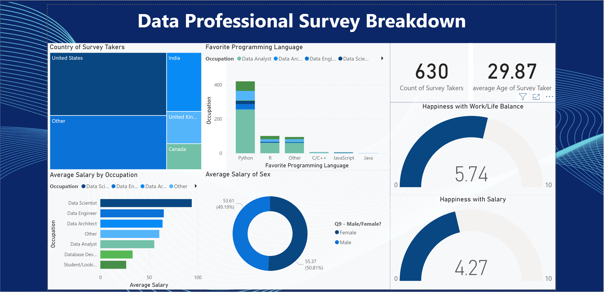

Bike Sales Dashboard
The Bike Sales Dashboard was created in Excel and depicts a filterable summery of the total individuals who have purchased Motorcycles within the current Quarter for a particuar branch. The Data can be filtered and the Information will change occordingly to display accurate relevant statistics with a distinctioin on female and male customers. This information can be further concised using the addtional filters on the left side of the dashboard.

Covid Dashboard
This Dashboard was formed using Tableau, it filters data based on the desired location selected on the interactive map located on the top right of the dashboard. The data will change to display accurate statistics regarding covid infections and deaths based on location and give predicitons based on patterns, which is located at the bottom of the dashboard.
Data Professional Dashboard
The Data Professional Survey was formed in PowerBI, The dashboard displays the Salary of Various Data Professions which can be further filtered by locations, gender, and profession to further gather targeted information regarding a specific statistic.